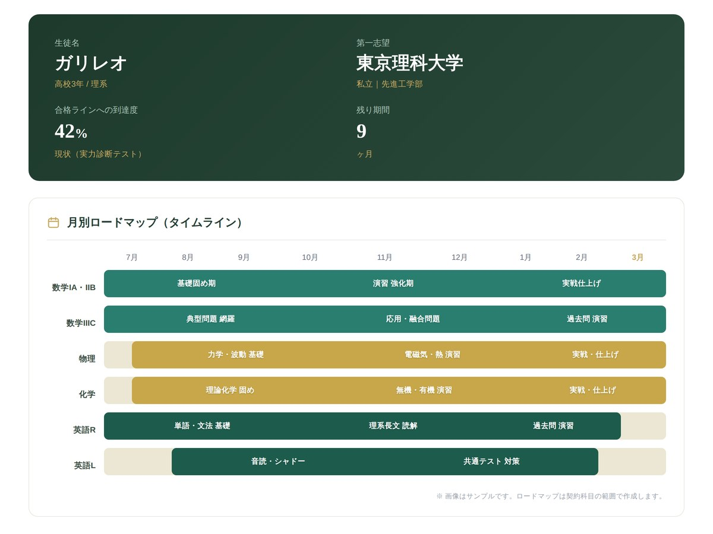
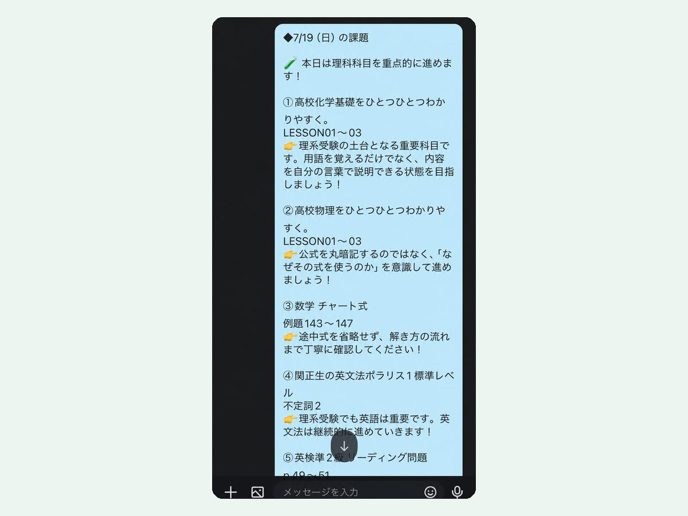
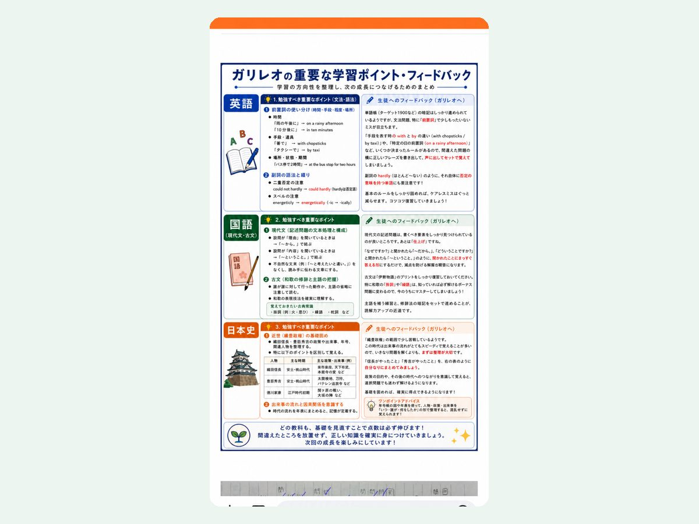

「1対1でじっくり見てほしい」——その選び方は正しいです。ただ、理系の大学受験は先生ひとりに任せるには範囲が広すぎます。ガリレオは、完全1対1のオンライン個別指導に、科目ごとの専門講師と毎日の課題を組み合わせた理系専門塾です。
集団授業だと、うちの子は質問できずに埋もれてしまう
分からないところを、その場で聞ける環境がほしい
志望校と子どものペースに合わせて、計画から考えてほしい
その感覚は正しいです。1対1は、理系の成績を変える近道です。
数学・物理・化学・英語のすべてを入試レベルで教えられる先生は多くありません。「数学は見られるが物理は…」が起こりがちです。
限られた授業時間は目の前の単元で精一杯。志望校から逆算した計画や、模試ごとの軌道修正までは手が回りにくくなります。
成績を決めるのは、授業のない日の過ごし方です。そこが本人任せになると、良い授業も成果につながりません。
これは先生の力量ではなく、「ひとりで全部」という仕組みの問題です。
家庭教師の良さを残し、限界だけを仕組みで埋めました。
数学II「図形と方程式」（領域と最大・最小）の授業で講師が書いた板書を、考え方が組み上がる順に並べました。解き方を覚えさせるのではなく、「なぜそうするのか」を図で確かめてから、例題で自分で使える形にしていきます。
板書はタップ（クリック）すると拡大して読めます
専門講師の1対1授業原理から理解し、解き方を自分で組み立てる
STEP 1
 拡大して見る
拡大して見る
(2x−y)(x²+y²−5)>0 を A・B の積と見て、「A>0 かつ B>0」または「A<0 かつ B<0」に場合分け。板書の右側には「まずは場合分け → 各々に対して領域を考える → 最後に図示」と、解く手順そのものを書き出しています。
境界は 直線 y=2x と 円 x²+y²=5（含まない）
STEP 2
 拡大して見る
拡大して見る
例題に入る前に、考え方の仕組みを図で押さえます。最大・最小を求めたい式を k とおき、直線 y=k を上下に動かして、領域と共有点をもつ範囲を読み取ります。
(式)=k → 直線を動かす → 1≦k≦8
STEP 3
 拡大して見る
拡大して見る
x≧0、y≧0、3x+y≦9、x+4y≦14 のとき、x+y の最大・最小は？ STEP 2 と同じく x+y=k とおき、直線 y=−x+k を動かします。境界の直線 y=−3x+9、y=−(1/4)x+7/2 も書き出して、位置関係を確かめています。
0≦k≦5 → 最大 5（点A(2, 3)）／最小 0（原点）
STEP 4
 拡大して見る
拡大して見る
x²+y²≦1 のとき、x+2y の最小値は？ 同じく x+2y=k とおきます。今度は領域が円なので、直線が円に接するときを、点と直線の距離の公式で式にします。
1=|k|／√(1²+2²) → k=±√5、k<0 より最小値 −√5
同じ「k とおいて直線を動かす」でも、STEP 3 では領域の頂点（点A(2, 3) と原点）、STEP 4 では円との接点で、最大・最小が決まりました。原理から理解しているから、問題の形が変わっても解き方を自分で組み立てられます。
授業のない日も、チームで担当塾長の計画管理と、毎日の課題・添削



| 一般的な オンライン家庭教師 | 集団塾・映像授業 | ガリレオ | |
|---|---|---|---|
| 指導の形 | 1対1 | 一斉・映像 | 完全1対1 |
| 理系の専門性 | 先生によって異なる | 科目はそろうが個別対応は限定的 | 科目ごとの理系専門講師 |
| 学習計画 | 先生次第 | カリキュラムが固定 | 担当塾長が作成・進捗管理 |
| 授業のない日 | 本人まかせ | 本人まかせ | 毎日の課題と添削 |
| はじめ方 | 体験授業など | 入会手続き | お試しコース ¥3,980 |
※一般的な傾向をまとめたもので、個別のサービスを評価するものではありません。
授業が完全1対1である点は同じです。違いは、先生ひとりではなくチームで支えることです。科目ごとに理系専門の講師が担当し、担当塾長が学習計画の作成と進捗管理を行います。さらに授業のない日も、毎日の課題と添削で学習が続きます。
はい。指導はすべてオンラインで完結するため、全国どこからでも受講できます。
オンライン個別指導は1回60分で、週1回・週2回から選べます。授業のない日も毎日の課題で学習を進めます。
数学（IA・IIB・IIIC）・物理・化学・生物・英語（理系長文読解を含む）に対応しています。担当科目は入塾面談時に確定します。
月額の指導料金は、学習状況と志望校を伺ったうえで無料相談・入塾面談にてご案内しています。まずはお試しコース（3,980円）で、指導の相性をご確認いただけます。
無料学習相談では、現在の成績と志望校を伺い、合格までの道筋を一緒に整理します。ガリレオが合うかどうかも率直にお伝えします。